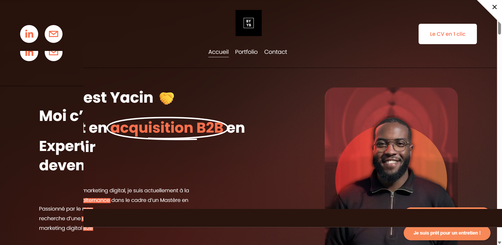

01 - Portfolio personnel
By Yacin
Refonte de l'ancien Squarespace pour passer d'une page personnelle sympathique à une présence plus lisible pour un recruteur: proposition de valeur immédiate, preuves de motivation, univers visuel assumé et parcours de contact direct.
Voir la home